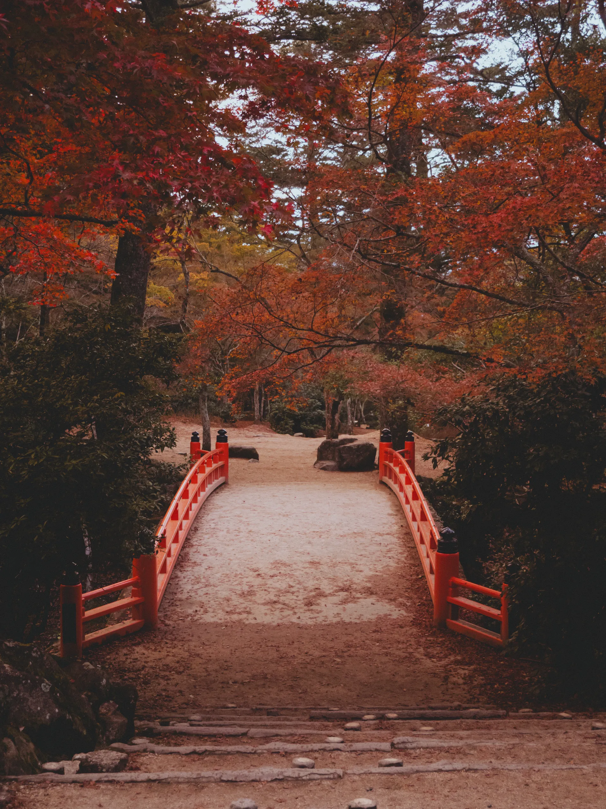

01 — portafolio
fotografia
Una seleccion de trabajos recientes: calles, templos, naturaleza y algo de mecanica — siempre con luz natural y composicion honesta.
02 — reel
videografia
Piezas audiovisuales breves, con ritmo natural y una estética cálida, pensadas para contar lo esencial.
demo
japan

03 — quien soy
sobre mi
Soy fotógrafo y videógrafo, y llevo más de siete años contando historias con luz natural. Me interesa lo real: los gestos espontáneos, los paisajes sin retocar y los momentos que no se repiten.
Trabajo cerca de mis clientes, desde la primera idea hasta la entrega final, cuidando cada detalle técnico sin perder la espontaneidad de lo vivido.
04 — lo que ofrezco
servicios
fotografia
Sesiones de retrato, producto, naturaleza y eventos, con edición cuidada y entrega en alta resolución.
videografia
Piezas documentales, comerciales y de eventos, grabadas en formato cinematográfico.
edicion
Color, ritmo y sonido: llevo cada proyecto desde el material crudo hasta la entrega final.
drone
Tomas aéreas para paisajes, eventos y proyectos comerciales, con piloto certificado.
05 — hablemos
contacto
Cuéntame sobre tu proyecto y te responderé en menos de 48 horas con una propuesta a tu medida.
escribime por whatsapp escribime un correo